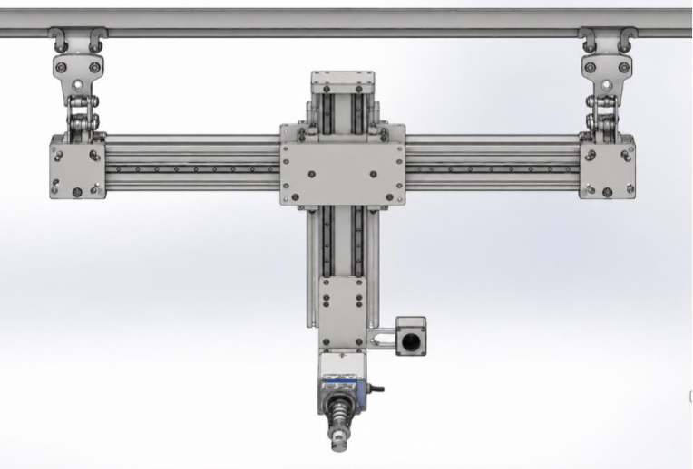
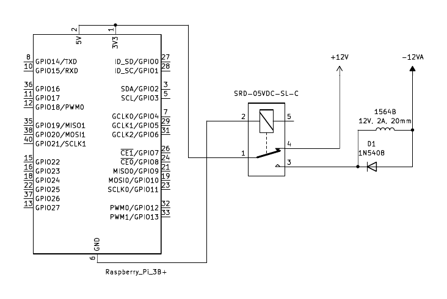
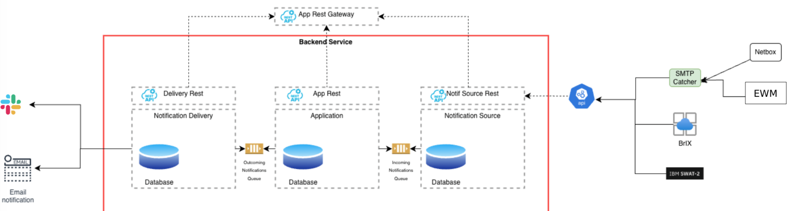
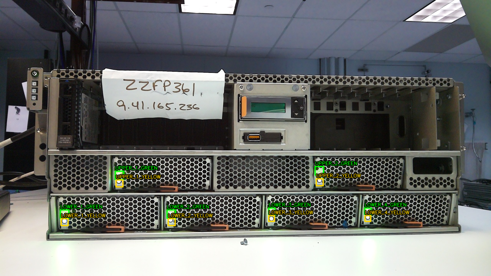
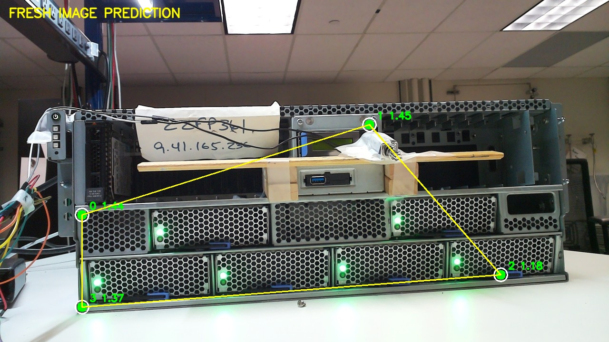

ibm bobot firmware validation system
Power Systems validation, agent tools, and developer notifications
Bobot began as an IBM watsonx challenge: give an AI assistant a way to observe and interact with physical Power systems. Working with the firmware validation team turned that idea into a broader lab problem. Four technicians were manually checking system states across roughly 30 servers, then recording test outcomes for engineering review. I worked on the physical test system and the software that made its results useful to the wider Power engineering team.
firmware
I built the actuation and control layer for hardware-in-the-loop Power firmware testing. Raspberry Pi relay control, robotic actuators, cameras, and sensors let the system operate and observe the server panel. Watchdogs, timeouts, interlocks, and safe sequencing kept physical test actions controlled and repeatable.


software
The Python test orchestrator coordinated physical actions with Power system telemetry and firmware fault injection over SSH and Telnet. I built a Model Context Protocol (MCP) interface for watsonx Bob agent tool calling, exposing system status, available tests, test execution, and results. Test evidence flowed into IBM Engineering Test Management (ETM) on Jazz.
To keep developers informed, I deployed a DevOps notification system built from three Java/Quarkus microservices. REST APIs, message queues, and PostgreSQL moved development updates and HIL/SIL test results through the services to Slack and email. Web dashboards and ETM gave engineering teams visibility into product progress and test outcomes.
- notification sourcemicroservice collecting engineering events and test updates.
- business logicmicroservice processing and routing events through the queue.
- notification deliverymicroservice sending updates to Slack and email.

computer vision
I trained RTMPose to localize panel landmarks and used ArUco markers to anchor the camera view as the rig or camera position changed. Those locations defined the LED regions to inspect. CNN classifiers then determined whether each indicator was on or off from its image crop, turning a visual check into structured evidence for the firmware test.
I tuned training hyperparameters for reliable classification under changing camera and lab lighting conditions, and explored quantization to reduce the model's inference cost for edge deployment.

